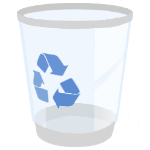
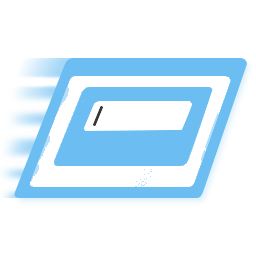
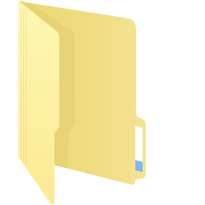
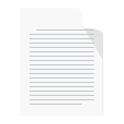
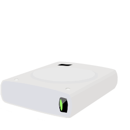
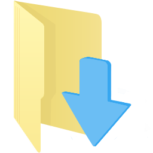
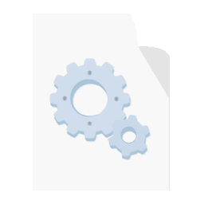

-
这台电脑
-

回收站
-
控制面板
-

网络
-

jQuery-SliderWiper-测试文件夹
-

jQuery-1.11.1.min.js
jQuery
- －
- □
- ×
- 这台电脑
- 思瀚(K:)
- www
- dianshang
- 这台电脑
Desktop
css
images
jd iconfont.zip
iconfont.zip 新加卷 (C:)
新加卷 (C:)
Desktop
css
images
jd- iconfont.zip
- 新加卷 (D:)
- 新加卷 (E:)
- 新加卷 (F:)
QQMusic
kcdown- 新加卷 (G:)
- css
- img
- js
- jd
- system
- Node
- CMD
- jdf
- demo.html
- zepto.html
 abc.txt
abc.txt- demo.html
- zepto.html
- abc.txt
- demo.html
- zepto.html
- abc.txt
mobile.html
HTML文件
- 修改日期：2013/7/18 10:26
- 大小：2.00KB
- 创建日期：2013/7/18 10:26
- 可用性：脱机可用
- 标记：添加标记
425各项目 选中1个项目 5.95kb